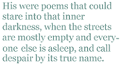

Quincy Lehr
On Ray Pospisil (with three poems by Pospisil)
I hadn’t spoken to Ray Pospisil in months, not since he rang me, elated that his manuscript of poetry had been accepted by a Dublin publisher. There were a couple of e-mail exchanges after that, and then, on a cold, clear January day here in Galway, I got word that Ray had died in Brooklyn, a casualty of a long struggle with depression and booze. I managed to get through the work day somehow, headed home, and spent the evening pondering the loss.
I knew Ray through the New York City poetry “circuit”, that network of participants in the readings that take place across the city. I first met him in the spring of 2005 at a reading in the East Village of New York City.It was clear, from the first time I heard him recite his work, that he was a poet of uncommon ability and expressiveness. His were poems that could stare into that inner darkness, when the streets are mostly empty and everyone else is asleep, and call despair by its true name. It is not the sort of poetry that is easy to get into magazines — though Ray did rack up some publication credits — but it was a poetry that was harrowing but moving, possessed of humour, tenderness, and that aching sense of a beauty that you can only experience occasionally, or at a distance, or in memory.
Ray’s poems were the poems of an intensely private man, a man who was often alone with his thoughts and memories, in whose work genuine interaction with others — friendship, family, romance — was a fragile thing, a counterpoint to the loneliness of the city, to a working life spent in front of a computer screen, and to the many insomniac nights of soul-searching that feature so prominently in Ray’s poetry. His work was not always palatable, and the comfort within it was hard-earned. There was never much in the way of bullshit in Ray’s poetry. In “Ghost in the House”, Ray wrote:
I hate when folks
refer to “The events of 9/11.”
Events? As if the murdered people sat
around some playing field in baseball caps
and fanned themselves with programs for the day’s
unfolding schedule. He is not deceased,
which means he simply upped and went away,
because he didn’t like the food, perhaps.
Ray is not deceased. He has not “passed on”. He is dead. American poetry has lost one of its best poets, and there was no commemoration of this at an AWP conference; there were no remarks in the pages of the New Yorker or the Atlantic Monthly. No statue went up to join Shakespeare and Robert Burns, and... ummm… Fitz-Greene Halleck on the Literary Walk in Central Park. The world went about its business.
I often wondered why Ray’s work wasn’t snapped up by the journals. The acceptances accreted slowly, and not for want of effort on his part. While Ray could manage a trope as well as anyone, he used his prosodic skill as a means of driving the point home to the reader, not as a means of sublimating a poem’s raison d’etre. He did not indulge in the frequent New Formalist fallacy that states that a poem’s worth is based on its technical perfection. The technical perfection was there to hone and focus the underlying honesty, and indeed, profundity of the work, which could result in a poetry that was uncomfortable but ultimately more satisfying than the decorousness too many editors seem to prefer in poems.
But that’s often how it happens, and, really, needn’t detain us. Nor should the poems that won’t now be written. We have the poems that were written, the poems that appeared in Ray’s chapbook, Some Time Before the Bell, the poems in his forthcoming collection, as well as the poems he read week after week, to small audiences in bars, theatres, and libraries across New York City. These poems were the work of a man who lived his life — not the life we might wish he had lived — a life in which love often proved elusive, in which all of the stupidity and petty cruelty and fucking indifference of the world in which we find ourselves weighed heavily.
And it’s our world, too, whether we seek to deny it, chop it into small, digestible driblets of McPoems, or just close our eyes to it. Ray, for whatever reason, did not, and it consumed him, leaving only his apotheosis, the poems that will, years from now, haunt those who come into contact with them. And they, we, remember him. We always will, and, through his work, so should you.
I wish I could say Ray’s death surprised me more than it did. The story was a familiar one. The drinking, then the withdrawal from the world outside his flat, and then... There had always been the last-minute save before. New York poet friends (and, as I have since discovered, others) managed to intervene, to get him to the hospital, and there would be another period of sobriety. And there would be poems, and even after the poet is gone, the poems remain.
POEMS BY RAY POSPISIL
Ghost in the House
When I was growing up, we had a ghost
which hovered over us. It hovered there
without a shape at suppertime, when talk
was on our schoolwork, how the yard needs more
attention, or the neighbours’ gossip, car
concerns and sneaker prices. Everyone
could feel the ghost but no one said a word.
He was “deceased,” my mother used to say
or “passed away.” She took us to the grave
and she complained about the lack of care
for grass around the stone. They never mow,
despite the contract, and the grass grew up
so high that you could barely read the name.
So we would stand there for a while, but she
would never tell a story, much less tell
us how she felt about him, how they had
some happy times. I never saw her cry
unless she saved that weak indulgence for
the private times she locked herself inside
her room and played her vinyl disks for hours.
I guess those were their favourite tunes, the ones
they may have danced to at the time they met.
She never said. I never asked. And now
she’s gone. I’ll never know. She passed away.
A grim, respectful photo on the wall,
but not so big to hint at sentiment,
reminded us the ghost once had a form.
And if a visitor inquired, he was
identified as “late,” as in “the boys’
late father,” now deceased, or not alive,
no longer living, passed away. The man
was in a plane that hit another plane
in some flash storm above the Andes, crashed
into a mountainside, where tribesmen stripped
his clothes and shoes off, yanked out all his teeth
to pry the silver from the fillings there,
and cut his goddamn finger off to get
the golden wedding ring. Deceased? It robs
the man of dignity to desiccate
his death with tidy words.
I hate when folks
refer to “The events of 9/11.”
Events? As if the murdered people sat
around some playing field in baseball caps
and fanned themselves with programs for the day’s
unfolding schedule. He is not deceased,
which means he simply upped and went away,
because he didn’t like the food, perhaps.
Of course she never told us how she got
the news. A call? Or did the company
dispatch a representative. She may
have seen a car pull up and wonder why
a man in such a business suit had come
to ring her doorbell while her husband was
away. If he’d been missing for a while,
she must have sensed what news had come. I wish
I’d heard her tell the story. And of course
she never told us how she felt that day
or if she missed him later on. But he
became a ghost and hovered over us
without a form. She never told us how
she felt. I never asked. And now she’s gone.
Insomnia
Some radios on call-in stations buzzed
and crackled underneath my bed at night,
preventing me from sleeping. As I tossed
to find a posture that would shut them out
and let me sleep at least an hour, the buzz
began congealing into words I heard.
But all the voices ranted on their harsh
obsessive paths of snide hysteria,
contemptuously barking down the ones
who called. And gradually they harmonised
till everyone was talking all the same,
but throwing echoes like you get around
a baseball park when radios throughout
the stands all blare the same announcer’s voice,
announcer’s voice,
with just a slight delay
a slight delay
from those that stretch out through
the distance,
through the distance
of the packed
and restless crowd. I gripped the sheets, and as
the voices came together they emerged
from underneath my bed as holograms
of heads that rose above me. They were stern
and never blinked. They hung there silently.
And then one spoke, repeated by the rest
in staggered sequence like the rounds in songs
for kids. “You will succeed.
You will succeed
in crushing spirits,
crushing spirits.
Those
around you will be damaged by your good
intentions,
good intentions,
just the way
it’s always been,
it’s always been
your good
intentions. All the precious dreams you now
can bring to sweet fruition,
you can bring
to sweet fruition
after years of work
and struggle, will indeed come true,
indeed
come true,
by years of work and struggle.
But
the dreams will turn to what you’re suffering now
though ten times worse than this,
you’re suffering now
though ten times worse.
You’ll feel you’ve chased a dim
elusive ghost and when you finally grasp
a hold, it burns like steam,
elusive ghost,
and when you finally grasp a hold it burns
and dissipates,
elusive ghost,
it burns
like steam,
elusive ghost,
and dissipates
in air.
You will be lonely growing old
but you will always have consoling hope
of true self-realisation
growing old
you will be lonely with consoling hope
of true self-realisation in a bleached,
locked ward
creating realisation in
a bleached, locked ward
creating moccasins.”
The first head stopped and licked its lips as all
the other heads’ cascading echoes closed
that final cadence, one by one, and fell
to silence, hissing on the “moccasins”.
I thought the heads would fade and let me sleep,
but they continued pulsing, shimmering
reflections of the green electric glow
my bedside clock emitted — 3:09.
And then the first head spoke again: “There is
a way for you to show some courage now,
to compensate for all the harm and all
the disappointment your pathetic deeds
of goodness have inflicted on the world.
It’s in your hands to leave the world a kind
of legacy”
— and all the other heads
joined in —
“Your absence.”
Then the first one spoke
alone. “Bequeath your absence, which will carve
a space for light where only shadow looms.”
I started getting up but then he spoke
again. “Be grateful for the shit you’ll miss:
the riots over gasoline, the floods
from polar ice caps melting, wars and bombs,
and mobs arousing people from their beds
at night for quick tribunals, marched away
for execution, confiscating hearts
and eyes and kidneys for the auction trade.
Be glad you’ll miss it, count your blessings.” All
the other heads agreed and nodded “yes”
in unison.
“You’ve got a chance to grab
your fate, so be pro-active, close the deal,
and never let them say again you lacked
the traits of character that leaders show.”
I leaped up from the bed and threw a punch
but all the heads dispersed in glowing smoke.
I did a hundred jumping jacks and drank
a couple beers, a shot of vodka, then
another till my nerves began to calm,
until my nerves began to calm.
A shot
of vodka till my nerves relaxed.
I tried
to mute the echoes with a cable show
on offshore drilling,
drilling through the sea
to punch a hole into the crust of earth.
I wondered why the ocean doesn’t all
run down the hole into the molten core
and turn to steam, and rise up through the cracks
in streets and cellar floors. We’ll heat our homes
while cars with little vacuum cleaners suck
it up to move their pistons. Power plants
could draw it through their turbine blades to spin
all day. We’ll never have to drill again.
We’ll never have to drill a rolling sea
arrayed before the light when everyone
is warm and all the wars have ended, all
the pretty sea is warm and all the fish
are thriving, and we never have to drill
again while everyone is warm and all
the fish arrayed before us shine, and all
the turbines turn and all the cars run on
in silence through the pretty sea where all
the fish are rolling and the wars are done.
[ From the chapbook Some Time Before the Bell (Modern Metrics, 2006) ]
Uncle at Rest
My uncle gripped a cigarette between
his thumb and finger, let it hang down by
his side. He never waved it all around
between two fingers. When he drew a puff,
his cheeks both caved, and rising smoke would make
him squint one eye a bit. He took a drink
of beer while holding down a drag, and then
exhaled, directing all the smoke up high.
My uncle loved that beach town during spring
when he was shaping up the bungalows
for summer renters. Always wore the same
old khaki pants with years of speckled paint
and flannel shirt. He’d work a couple hours
then he’d take a break to rock that wicker chair
and drink a beer. The air was cool in spring,
and salty. There were hardly any cars
around, just owners fixing up their shacks,
and lots of seagulls. Waves crashed on the beach.
My uncle took a drink of beer and rubbed
a spotted, hairy hand across his eyes
then slapped his thigh. “I love this goddamn place,”
he said, and took another deep inhale.
Quincy R. Lehr was raised in Norman, Oklahoma in the U.S. and presently lives in Galway, Ireland. His work has appeared in or is forthcoming in journals including Iambs & Trochees, The Dark Horse, The Raintown Review, and WOW! Magazine. His first book of poetry, Across the Grid of Streets, was published by Seven Towers in April 2008. Ray Pospisil’s chapbook Some Time Before the Bell was published by Modern Metrics in 2006, and his posthumous collection The Bell will be published by Seven Towers in 2009.
|